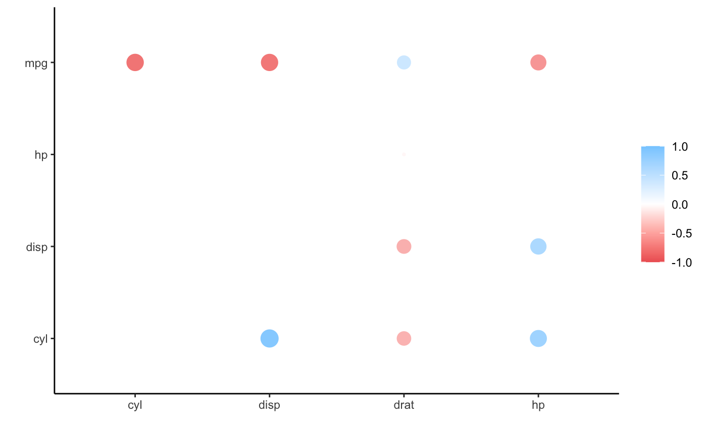
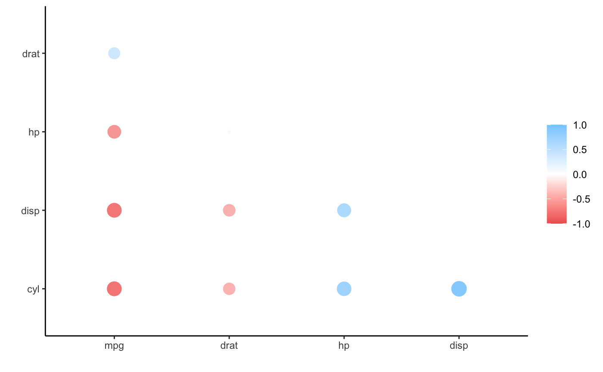

corrr is a package for exploring correlations in R. It makes it possible to easily perform routine tasks when exploring correlation matrices such as ignoring the diagonal, focusing on the correlations of certain variables against others, or rearranging and visualizing the matrix in terms of the strength of the correlations.
Using corrr starts with correlate(), which acts like the base correlation function cor(). It differs by defaulting to pairwise deletion, and returning a correlation data frame (cor_df) of the following structure:
tbl with an additional class, cor_df
NA) so they can be ignored.To work with further, let’s create a correlation data frame using correlate() from the mtcars data that comes with R:
library(corrr)
d <- correlate(mtcars, quiet = TRUE)
d
#> # A tibble: 11 × 12
#> term mpg cyl disp hp drat wt qsec vs am
#> <chr> <dbl> <dbl> <dbl> <dbl> <dbl> <dbl> <dbl> <dbl> <dbl>
#> 1 mpg NA -0.852 -0.848 -0.776 0.681 -0.868 0.419 0.664 0.600
#> 2 cyl -0.852 NA 0.902 0.832 -0.700 0.782 -0.591 -0.811 -0.523
#> 3 disp -0.848 0.902 NA 0.791 -0.710 0.888 -0.434 -0.710 -0.591
#> 4 hp -0.776 0.832 0.791 NA -0.449 0.659 -0.708 -0.723 -0.243
#> 5 drat 0.681 -0.700 -0.710 -0.449 NA -0.712 0.0912 0.440 0.713
#> 6 wt -0.868 0.782 0.888 0.659 -0.712 NA -0.175 -0.555 -0.692
#> 7 qsec 0.419 -0.591 -0.434 -0.708 0.0912 -0.175 NA 0.745 -0.230
#> 8 vs 0.664 -0.811 -0.710 -0.723 0.440 -0.555 0.745 NA 0.168
#> 9 am 0.600 -0.523 -0.591 -0.243 0.713 -0.692 -0.230 0.168 NA
#> 10 gear 0.480 -0.493 -0.556 -0.126 0.700 -0.583 -0.213 0.206 0.794
#> 11 carb -0.551 0.527 0.395 0.750 -0.0908 0.428 -0.656 -0.570 0.0575
#> # … with 2 more variables: gear <dbl>, carb <dbl>At first, a correlation data frame might seem like an unnecessary complexity compared to the traditional matrix. However, the purpose of corrr is to help use explore these correlations, not to do mathematical or statistical operations. Thus, by having the correlations in a data frame, we can make use of packages that help us work with data frames like dplyr, tidyr, ggplot2, and focus on using data pipelines. Lets look at some examples:
library(dplyr)
# Filter rows to occasions in which cyl has a correlation of .7 or more with
# another variable.
d %>% filter(cyl > .7)
#> # A tibble: 3 × 12
#> term mpg cyl disp hp drat wt qsec vs am gear
#> <chr> <dbl> <dbl> <dbl> <dbl> <dbl> <dbl> <dbl> <dbl> <dbl> <dbl>
#> 1 disp -0.848 0.902 NA 0.791 -0.710 0.888 -0.434 -0.710 -0.591 -0.556
#> 2 hp -0.776 0.832 0.791 NA -0.449 0.659 -0.708 -0.723 -0.243 -0.126
#> 3 wt -0.868 0.782 0.888 0.659 -0.712 NA -0.175 -0.555 -0.692 -0.583
#> # … with 1 more variable: carb <dbl>
# Select the mpg, cyl and disp columns (and term)
d %>% select(term, mpg, cyl, disp)
#> # A tibble: 11 × 4
#> term mpg cyl disp
#> <chr> <dbl> <dbl> <dbl>
#> 1 mpg NA -0.852 -0.848
#> 2 cyl -0.852 NA 0.902
#> 3 disp -0.848 0.902 NA
#> 4 hp -0.776 0.832 0.791
#> 5 drat 0.681 -0.700 -0.710
#> 6 wt -0.868 0.782 0.888
#> 7 qsec 0.419 -0.591 -0.434
#> 8 vs 0.664 -0.811 -0.710
#> 9 am 0.600 -0.523 -0.591
#> 10 gear 0.480 -0.493 -0.556
#> 11 carb -0.551 0.527 0.395
# Combine above in a single pipeline
d %>%
filter(cyl > .7) %>%
select(term, mpg, cyl, disp)
#> # A tibble: 3 × 4
#> term mpg cyl disp
#> <chr> <dbl> <dbl> <dbl>
#> 1 disp -0.848 0.902 NA
#> 2 hp -0.776 0.832 0.791
#> 3 wt -0.868 0.782 0.888Furthermore, by having the diagonal set to missing, we don’t need to put in extra effort to ignore them when summarizing the correlations. For example:
# Compute mean of each column
library(purrr)
d %>%
select(-term) %>%
map_dbl(~ mean(., na.rm = TRUE))
#> mpg cyl disp hp drat
#> -0.1050454113 -0.0925483176 -0.0872737071 0.0006800268 -0.0037165212
#> wt qsec vs am gear
#> -0.0828684293 -0.1752247305 -0.1145625942 0.0053087327 0.0484120552
#> carb
#> 0.0563419513As the above section suggests, the corrr API is designed with data pipelines in mind (e.g., to use %>% from the magrittr package). After correlate(), the primary corrr functions take a cor_df as their first argument, and return a cor_df or tbl (or output like a plot). These functions serve one of three purposes:
Internal changes (cor_df out):
shave() the upper or lower triangle (set to NA).rearrange() the columns and rows based on correlation strengths.Reshape structure (tbl or cor_df out):
Output/visualizations (console/plot out):
fashion() the correlations for pretty printing.rplot() a shape for each correlation.network_plot() a point for each variable, joined by paths for correlations.By combing these functions in data pipelines, it’s possible to easily explore your correlations.
For example, lets focus on the correlations of mpg and cyl with all the others:
d %>% focus(mpg, cyl)
#> # A tibble: 9 × 3
#> term mpg cyl
#> <chr> <dbl> <dbl>
#> 1 disp -0.848 0.902
#> 2 hp -0.776 0.832
#> 3 drat 0.681 -0.700
#> 4 wt -0.868 0.782
#> 5 qsec 0.419 -0.591
#> 6 vs 0.664 -0.811
#> 7 am 0.600 -0.523
#> 8 gear 0.480 -0.493
#> 9 carb -0.551 0.527Or maybe we want to focus in on a few variables (mirrored in rows too) and print the correlations without an upper triangle and fashioned to look nice:
d %>%
focus(mpg:drat, mirror = TRUE) %>% # Focus only on mpg:drat
shave() %>% # Remove the upper triangle
fashion() # Print in nice format
#> term mpg cyl disp hp drat
#> 1 mpg
#> 2 cyl -.85
#> 3 disp -.85 .90
#> 4 hp -.78 .83 .79
#> 5 drat .68 -.70 -.71 -.45Alternatively, we can visualize these correlations (let’s clear the lower triangle for a change):
d %>%
focus(mpg:drat, mirror = TRUE) %>%
shave(upper = FALSE) %>%
rplot() # Plot
#> Don't know how to automatically pick scale for object of type noquote. Defaulting to continuous.
Perhaps we’d like to rearrange the correlations so that the plot becomes easier to interpret. In this case, we can add rearrange() into our pipeline before shaving one of the triangles (we’ll take correlation sign into account with absolute = FALSE).
d %>%
focus(mpg:drat, mirror = TRUE) %>%
rearrange(absolute = FALSE) %>%
shave() %>%
rplot()
#> Don't know how to automatically pick scale for object of type noquote. Defaulting to continuous.